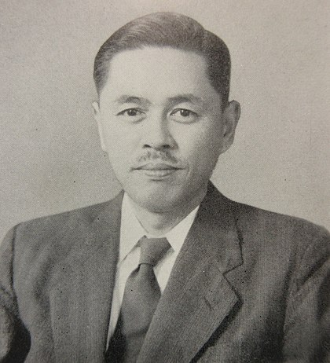

Оща́дливе виробни́цтво (lean manufacturing — англ. lean — пісний, стрункий, без жиру) — концепція менеджменту, що згідно за визначенням дослідників Дж. Вомак, Д. Джонс та Д. Рос[1], була створена на японському підприємстві Toyota і заснована на неухильному прагненні до усунення всіх видів втрат. Ощадливе виробництво передбачає залучення у процес оптимізації бізнесу кожного співробітника і максимальну орієнтацію на споживача.
Lean — проривний підхід до менеджменту і керування якістю, який забезпечує довготривалу конкурентоздатність без істотних капіталовкладень. Ощадливе виробництво — це система організації і управління розробленням продукції, виробництвом, взаємовідношеннями з постачальниками і споживачами, коли продукція виготовляється у точній відповідності із запитами споживачів і з меншими втратами.
Таїті Оно вважається батьком виробничої системи Тойоти, який став засновником популярної у всьому світі концепції Ощадливе виробництво . Система Toyota стала відома в західній інтерпретації як Lean manufacturing. Значний внесок у розвиток теорії ощадливого виробництва вніс соратник і помічник Таїті Оно — Сігу Сінг, який створив метод SMED. 